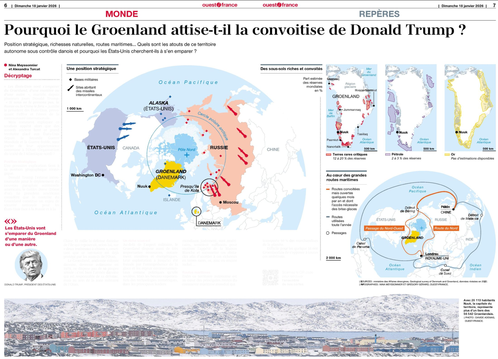

CARTE. Glace, hôtel, camping, sorties : voici combien coûtent vos vacances dans les terres à l’Ouest
Publication sur le site web de Ouest-France
24 août 2026
Lien vers l’articleLe texte permet d’entrer dans l’analyse fine d’enjeux complexes. Parce que les écrits restent, j’attache une grande importance à écrire sur les sujets qui me tiennent à cœur et à les illustrer par des cartes et des infographies.
Publication sur le site web de Ouest-France
24 août 2026
Lien vers l’articlePublication sur le site web de Ouest-France
12 août 2026
Lien vers l’articlePublication sur le site web de Ouest-France
24 juillet 2026
Lien vers l’articlePublication sur le site web de Ouest-France
11 juillet 2026
Lien vers l’articlePublication sur le site web de Ouest-France
11 juillet 2026
Lien vers l’articlePublication sur le site web de Ouest-France
11 juin 2026
Lien vers l’articlePublication sur le site web de Ouest-France
13 mai 2026
Lien vers l’articlePublication sur le site web de Ouest-France
11 mai 2026
Lien vers l’articlePublication sur le site web de Ouest-France
1er avril 2026
Lien vers l’articlePublication sur le site web de Ouest-France
26 février 2026
Lien vers l’articlePublication sur le site web le 13 janvier 2026 et dans le journal papier Dimanche Ouest-France le 18 janvier 2026
Lien vers l’article
Publication sur le site web de Ouest-France
4 décembre 2025
Lien vers l’article